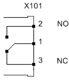
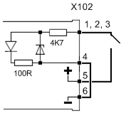
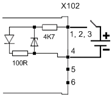

NK823x Pin Assignment
Relay Output (X101) |
Pin | Assignment | Circuit |
|---|---|---|
1 | Common |  |
2 | NO output | |
3 | NC output |
Inputs (X102) |
Pin | Assignment | Circuit 1 (Supervision of Internal Power Supply) | Circuit 1 (Supervision of External Power Supply) |
|---|---|---|---|
1 | Input 1 (Mains failure) 1) |  |  |
2 | Input 2 (Battery fault) 1) | ||
3 | Input 3 (Power supply fault) 1) | ||
4 | Common | ||
5 | + Val | ||
6 | – Val |
1) | The input signals can be used individually or combined together for power supply supervision application. |
Power Supply (X103) |
Power supply | Pin | Assignment |
|---|---|---|
Primary | 1 | + |
2 | Earth | |
3 | – | |
N/A | 4 | Not used |
N/A | 5 | Not used |
Secondary (optional) | 6 | + |
7 | Earth | |
8 | – |
RS485 connectors (X104 and X105) |
Pin | Assignment |
|---|---|
1 | RS485 + |
2 | RS485 – |
Ethernet Connections |
Pin | Assignment |
|---|---|
1 | TX+ |
2 | TX– |
3 | RX+ |
4 |
|
5 |
|
6 | RX– |
7 |
|
8 |
|
RS232 Connections |
Pin | Assignment | |
|---|---|---|
| COM 1-2 | COM 3-4 |
1 | CD |
|
2 | RXD | RXD |
3 | TXD | TXD |
4 | DTR |
|
5 | GND | GND |
6 | DSR |
|
7 | RTS |
|
8 | CTS |
|
9 | RI |
|